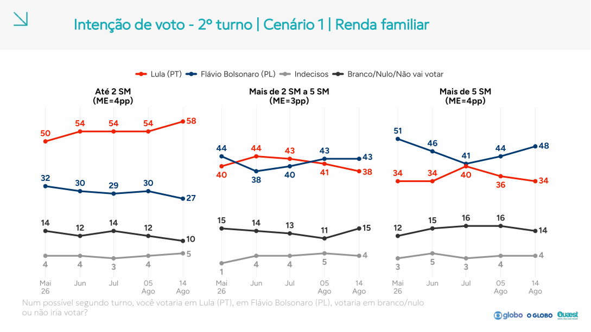
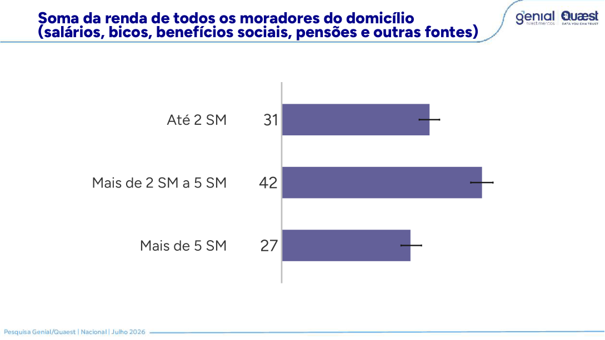
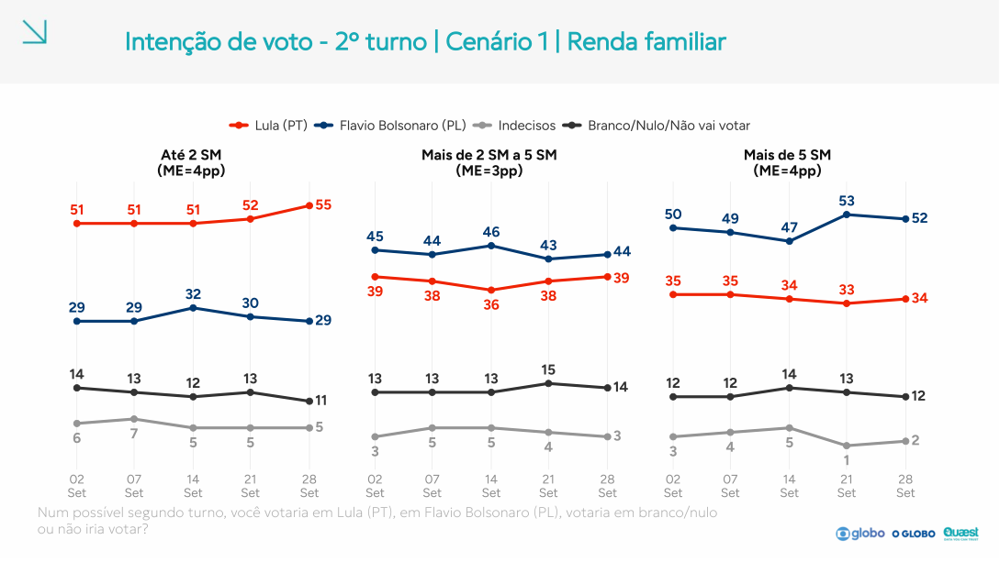
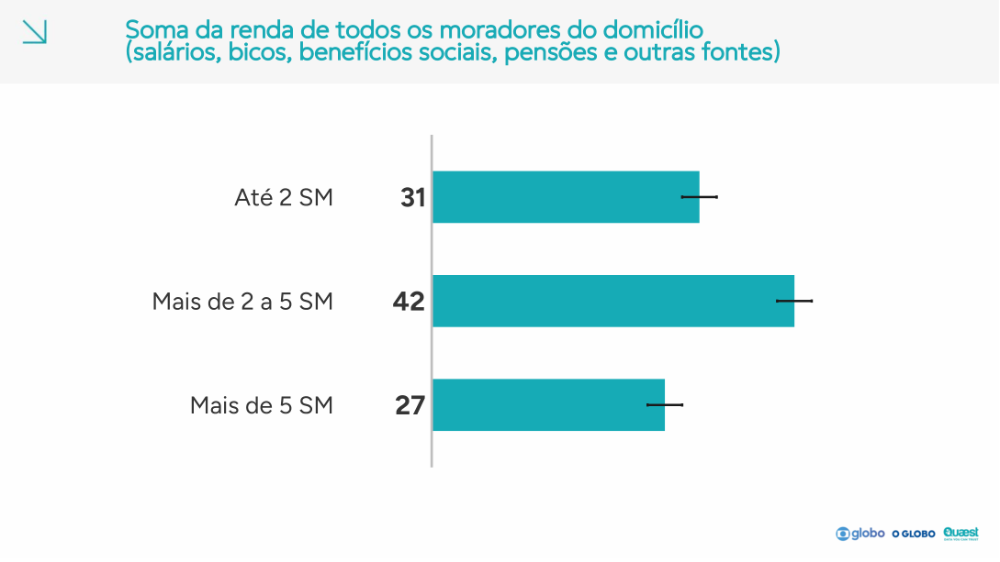
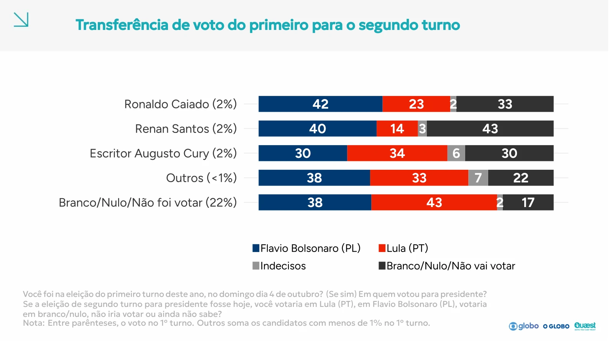

Quem está no grupo misto?
Branco, nulo e ausência juntos não identificam o voto dos abstencionistas.
Quaest · 14 outubro 2026 · Íntegra conferida
A íntegra confirma 46% a 44% e abre 23 temas. Mas o grupo de transferência mistura branco, nulo e ausência; o relatório não publica uma regra de eleitor provável. Auditamos o que os dados permitem dizer sobre presença, renda e escolhas.
Três caminhos para ler a pesquisa
Branco, nulo e ausência juntos não identificam o voto dos abstencionistas.
O que um filtro mudaria — e por que isso não valida um eleitor provável.
Leitura completa por tema, perguntas, recortes e acesso às imagens originais.
A íntegra permite ler a transferência. Não permite separar o voto dos abstencionistas.
Percentuais publicados dentro de cada grupo. Barras acomodam somas arredondadas; números preservados.
Tomando os números arredondados literalmente, 22% × 43% = 9,46 pontos do total em intenção de Lula; 22% × 38% = 8,36 em Flávio. O saldo deste grupo é 1,10 ponto a favor de Lula no total. Os 81% que declaram um dos dois nomes não têm comparecimento futuro observado.
A página 19 mostra antigos eleitores de três candidatos, “outros” e o grupo misto. Faltam as linhas de quem lembra voto em Lula ou Flávio, além do NS/NR sobre o passado. Não é possível conferir retenção, trocas entre finalistas e fechamento do novo placar com essa matriz parcial. As bases de cada linha também não são publicadas.
Escala comum: 0–100%
Memória: p. 129. Urna: TSE de 04/10, 27 UFs, sem exterior, sobre todos os aptos. Há ainda 3% NS/NR no voto lembrado; bases individuais não publicadas.
A urna teve 24,62% sem voto válido — 20,84% de ausentes e 3,78% de brancos/nulos sobre os aptos. A memória registra 22% no grupo misto, mais 3% NS/NR. Flávio e Lula lembrados também ficam próximos da urna nessa régua. Não há aqui evidência de uma enorme falta de abstencionistas na memória agregada. Isso tampouco demonstra calibração pelo voto anterior ou representatividade dos subgrupos.
Fonte: relatório Quaest · p. 129Referência oficial: contagens, arquivo, snapshot e SHA-256. Não comparar os 35% e 34% de memória aos 47% e 45% dos válidos: os denominadores são diferentes.
Teste de sensibilidade: reduzir proporcionalmente apenas os votos válidos declarados pelo grupo misto, mantendo o restante do topline. O cenário de 100% reproduz a intenção publicada. Zero significa que nenhuma de suas escolhas F/L vira voto válido; pode haver ausência ou voto inválido, sem distingui-los. Não é previsão nem correção.
| Fração mantida da conversão declarada (%) | F / total | L / total | F × L / válidos |
|---|---|---|---|
| 0 | 37,64 | 34,54 | 52,15 × 47,85 |
| 25 | 39,73 | 36,91 | 51,84 × 48,16 |
| 50 | 41,82 | 39,27 | 51,57 × 48,43 |
| 75 | 43,91 | 41,63 | 51,33 × 48,67 |
| 100 | 46,00 | 44,00 | 51,11 × 48,89 |
São produtos de percentuais arredondados, sem IC próprio. Não identificar os 22% inteiros como abstencionistas, nem aplicar automaticamente esse cenário às centrais.
Não localizamos regra pública de eleitor provável nesta íntegra ou na transcrição do registro consultada.
Universo declarado na p. 2. A p. 3 descreve cotas e pós-estratificação por “MrP ou rake”.
Não há escore de comparecimento, taxa prevista, corte de inclusão, tamanho da amostra filtrada ou teste retrospectivo divulgado.
A abstenção efetiva do primeiro turno foi 20,84% no Brasil, sem exterior. Isso torna indefensável transportar as respostas de intenção diretamente para volumes de votos sem uma hipótese de presença. Mas não demonstra que uma futura abstenção menor seja matematicamente impossível. A crítica verificável é a ausência de uma ponte publicada entre intenção e voto efetivo.
Percentuais publicados dentro de cada grupo. Barras acomodam somas arredondadas; números preservados.
Escala comum: 0–100%
Quaest, p. 29. Percentuais no próprio grupo; NS/NR de interesse não tem voto publicado. Interesse não é presença observada.
| Grupo retido | F × L / total do grupo | Soma F+L | F × L / apenas os dois |
|---|---|---|---|
| Total publicado | 46 × 44 | 90% | 51,11 × 48,89 |
| Muito interessado | 50 × 47 | 97% | 51,55 × 48,45 |
| Pouco interessado | 45 × 41 | 86% | 52,33 × 47,67 |
| Nada interessado | 39 × 37 | 76% | 51,32 × 48,68 |
Se alguém retivesse apenas os “muito interessados”, obteria 50 × 47 no grupo, ou 51,55% × 48,45% entre os dois nomes. A mudança frente aos 51,11% × 48,89% do total é pequena nessa conta. Isso exclui todos os demais grupos por uma regra nossa, sem validação; não é um filtro divulgado ou recomendado. Os indecisos e não votantes não se transformam automaticamente em ausência.
A p. 31 mede firmeza da escolha, não firmeza de comparecimento. Não se infere que não existam tratamentos internos não divulgados. Faltam o questionário integral arquivado, microdados e documentação operacional. As centrais Arvor mantêm suas hipóteses de presença explícitas e independentes desta investigação.
A íntegra publica o perfil 31/42/27 na p. 147. A etapa da ponderação e as bases continuam sem identificação.
Escala comum: 0–100%
Fontes: perfil Quaest, p. 147 (31/42/27), e PNADC anual 2025, pessoas 16+. Etapa antes/depois dos pesos não indicada no perfil; seu uso como margem dos cruzamentos continua hipótese.
Escala comum: 0–100%
Percentuais sobre o total. Ajustado = publicado + diferença entre recomposições PNAD e perfil. Sensibilidade a uma margem; não é resultado corrigido nem previsão.
Diferença F−L em pontos percentuais · escala −5 a +5
Fonte: cruzamentos Quaest de 03/10 e 14/10. Mudança da diferença F−L dentro de cada faixa; não são contribuições ao total nem variações estatisticamente identificadas.
| Renda domiciliar | Flávio | Lula | BN/não vota | Indecisos | Perfil / PNAD |
|---|---|---|---|---|---|
| Até 2 SM | 36% | 53% | 10% | 1% | 31% / 35,19% |
| Mais de 2 a 5 SM | 49% | 41% | 9% | 1% | 42% / 39,26% |
| Mais de 5 SM | 53% | 39% | 8% | 0% | 27% / 25,55% |
Usando o perfil publicado 31/42/27 como margem dos cruzamentos, o cruzamento recompõe 46,05% de Flávio e 44,18% de Lula, contra 46% e 44% publicados. O controle por sexo recompõe 46,23% e 44,30%. Idade e escolaridade também conferem a menos de 0,3 pp por candidato. São verificações da leitura, não confirmação dos pesos finais.
31/42/27 agora estão no perfil da amostra, não apenas nas cotas planejadas. A íntegra (pp. 143 e 147) não informa se esse perfil é anterior ou posterior à ponderação. A p. 3 declara “MrP ou rake”, sem discriminar a implementação. A conta assume que o perfil publicado é a margem adequada aos cruzamentos e preserva o topline: ajustado = publicado + (PNAD × voto por faixa − perfil × voto por faixa). A boa recomposição não verifica essa hipótese; faltam bases e pesos individuais.
O registro declara PNADC anual 2025, primeira visita, para renda domiciliar total. A régua Arvor usa a mesma edição, pessoas de 16 anos ou mais e os cortes nominais convertidos aos preços do histograma. A diferença das distribuições exige reconciliar universo, conceito e calibração; não demonstra uso de PNAD antiga. Perfil na p. 147 · Voto por renda na p. 24.
| Faixa | 03/10 · F × L | 14/10 · F × L | Mudança F−L na faixa |
|---|---|---|---|
| Até 2 SM | 33 × 54 | 36 × 53 | +4 |
| Mais de 2 a 5 SM | 47 × 37 | 49 × 41 | −2 |
| Mais de 5 SM | 53 × 36 | 53 × 39 | −3 |
Até 2 SM, Flávio sobe três pontos e Lula cai um: a distância muda quatro pontos a favor de Flávio. Entre 2 e 5 SM, Lula cresce quatro contra dois de Flávio; acima de 5 SM, Lula ganha três e Flávio fica parado. São movimentos numéricos em amostras distintas, sem teste de significância por faixa e sem identificar quem mudou de voto.
Fixando 31/42/27 nas duas pontas, as contribuições para a mudança F−L são +1,24, −0,84 e −0,81 pp, soma −0,41 pp. O gap publicado não muda; a diferença dos resíduos é +0,41 pp. Não forçamos o fechamento. O perfil de 03/10 era hipótese da onda anterior, e o atual é perfil publicado, com etapa da ponderação não indicada. Essa conta não prova composição final constante.
Perfil 31/42/27 publicado na p. 147, sem indicar antes/depois da ponderação e sem bases. Sua aplicação como margem dos cruzamentos continua hipótese. A evolução compara amostras independentes, não migração individual nem efeito do feriado; não se testou a significância das mudanças por faixa. Em 03/10, 31/42/27 era hipótese da onda anterior. Sem prova de mudança da composição nem de pesos finais iguais.
Cinco gráficos originais extraídos do arquivo salvo · Todos os recortes em CSV · Extração, integridade e limites. São 25 recortes completos mais o total. O gráfico de identificação lulista não tinha rótulos numéricos no arquivo e permanece ausente, nunca zero.
| Régua PNAD | Flávio | Lula |
|---|---|---|
| Pessoas 16+, renda efetiva | 45,40 | 44,53 |
| Pessoas 16+, renda habitual | 45,41 | 44,51 |
| Domicílios, renda efetiva | 44,27 | 45,51 |
A primeira onda depois da urna não inaugura a vantagem numérica de Flávio no segundo turno.
| Segmento | Flávio | Lula | Branco/nulo/não vai votar | Indecisos |
|---|---|---|---|---|
| 03/10 · antes da urna | 44% | 42% | 13% | 1% |
| 14/10 · depois da urna | 46% | 44% | 9% | 1% |
| Resposta | 03/10 | 14/10 | Variação |
|---|---|---|---|
| Flávio | 44% | 46% | +2 pp |
| Lula | 42% | 44% | +2 pp |
| Branco/nulo/não vai votar | 13% | 9% | -4 pp |
| Indecisos | 1% | 1% | +0 pp |
Isso descreve os totais; não acompanha pessoas. São amostras diferentes. Não sabemos quais entrevistados saíram do branco/nulo, mudaram de candidato ou passaram a responder. O grupo agregado também mistura branco, nulo e quem diz que não vai votar: não pode ser convertido inteiro em abstenção.
Fonte: Quaest: íntegra de 14/10; onda de 03/10 no acervo conferido. Arquivo do 1º turno. Os pontos são publicados; a redistribuição proporcional é conta nossa, não fluxo observado.
Duelo Lula × Flávio em todas as ondas do acervo, sempre com o mesmo denominador.
Fonte: acervo Quaest, maio–outubro de 2026. Eixo vertical de 30% a 50%; datas de divulgação no eixo horizontal. Linhas apenas ligam as ondas, sem interpolar pesquisas. No celular, cada ponto aparece com seu valor e diferença F−L.
| Divulgação | Campo | Flávio / total | Lula / total | F−L / total | Flávio / F+L |
|---|---|---|---|---|---|
| 13/05 | 08/05 a 11/05 | 41 | 42 | -1 | 49,40 |
| 10/06 | 05/06 a 08/06 | 38 | 44 | -6 | 46,34 |
| 15/07 | 10/07 a 13/07 | 37 | 45 | -8 | 45,12 |
| 05/08 | 31/07 a 03/08 | 39 | 44 | -5 | 46,99 |
| 14/08 | 10/08 a 13/08 | 40 | 43 | -3 | 48,19 |
| 02/09 | 30/08 a 01/09 | 41 | 42 | -1 | 49,40 |
| 07/09 | 03/09 a 06/09 | 41 | 41 | +0 | 50,00 |
| 14/09 | 10/09 a 13/09 | 42 | 40 | +2 | 51,22 |
| 21/09 | 17/09 a 20/09 | 42 | 41 | +1 | 50,60 |
| 28/09 | 24/09 a 27/09 | 42 | 42 | +0 | 50,00 |
| 03/10 | 02/10 a 03/10 | 44 | 42 | +2 | 51,16 |
| 14/10 | 10/10 a 13/10 | 46 | 44 | +2 | 51,11 |
Em julho, a Quaest media Lula 45% e Flávio 37%. Em 14/09 já divulgava Flávio 42% e Lula 40% no cenário de segundo turno; em 03/10, 44% a 42%. A série oscilou, inclusive com empate em 28/09. Não há uma primeira passagem para Flávio à frente depois da eleição. A impressão de virada nasce, em parte, de comparar o primeiro turno de 03/10 (Lula 40 × Flávio 38) com o segundo turno de 14/10 (Flávio 46 × Lula 44). São perguntas diferentes. A p. 17 da íntegra também informa que o cenário de segundo turno deixou de ser hipotético após 03/10; a comparação mantém os candidatos, mas não uma formulação literalmente idêntica.
No mesmo duelo de segundo turno, a diferença entre os dois, normalizada por F+L, passa de 2,33 para 2,22 pp. A variação é de -0,10 pp. São renormalizações nossas, não números de eleitor provável divulgados pela Quaest.
Entre as divulgações de 15/07 e 28/09, a diferença publicada F−L passou de −8 para zero. O perfil de renda publicado era o mesmo nas duas pontas: 31% / 42% / 27%. Fixando essa margem, a mudança aparece nas preferências dentro das faixas.
Diferença F−L em pontos percentuais · escala −5 a +5
Conta Arvor com pesos publicados 31/42/27 fixos. Soma +7,64 pp contra +8 pp no total; resíduo +0,36 pp preservado. Fonte: Quaest, 15/07 e 28/09. Não identifica migração individual.
| Faixa | Peso publicado | Julho · F × L | 28/09 · F × L | Mudança F−L na faixa | Contribuição / total (pp) |
|---|---|---|---|---|---|
| Até 2 SM | 31% | 29 × 54 | 29 × 55 | −1 | −0,31 |
| Mais de 2 a 5 SM | 42% | 40 × 43 | 44 × 39 | +8 | +3,36 |
| Mais de 5 SM | 27% | 41 × 40 | 52 × 34 | +17 | +4,59 |
A recomposição atribui +3,36 pp à faixa de dois a cinco salários e +4,59 pp à faixa acima de cinco. Até dois salários, a contribuição é −0,31 pp. A soma é +7,64 pp; a mudança da diferença publicada é +8 pp. Sobram +0,36 pp na diferença dos resíduos de recomposição.
Conta por faixa: peso × [(F−L) em setembro − (F−L) em julho]. Os cruzamentos e os totais são arredondados; os resíduos são mantidos, sem forçar fechamento. São pontos estimados em amostras diferentes, sem teste de significância das mudanças por segmento. Não identificam migração individual, renda como causa ou efeito de campanha.
O contraponto à hipótese do feriadão: parte importante da aproximação já aparecia antes de outubro, nas faixas média e alta. A nova coleta não pode ser responsabilizada por esse movimento anterior. Esta decomposição para em 28/09: não usa o perfil assumido de 03/10 e não imputa nenhum cruzamento de 14/10.




Julho: votos na coluna Jul do relatório de 14/08, p. 36, e perfil do relatório de julho, p. 114. Setembro: votos na coluna 28 Set, p. 37, e perfil na p. 204 do relatório de 28/09. Páginas integrais renderizadas dos PDFs intactos; hashes no JSON da auditoria.
Sem exterior, Flávio teve 47,0376% e Lula 45,1561% dos válidos do primeiro turno. Retendo só os votos dos dois, a fração de Flávio é 51,02%, próxima aos 51,11% atuais. Essa proximidade não determina transferências, presença nem resultado de segundo turno. A terceira via fica fora dessa conta; os ausentes não são observados.
Apuração oficial arquivada e proveniência. O universo sem exterior é o comparável ao levantamento domiciliar no Brasil.
Cada onda aponta para a ficha e as fontes originais no JSON da auditoria. A defesa do instituto também está registrada: no balanço de 06/10, Felipe Nunes atribui o movimento final ao voto útil. É a interpretação do instituto, não identificação causal nossa.
O 46 × 44 reúne diferenças amplas por região, sexo, religião e identificação política.
Escala comum: 0–100%
Fonte: Quaest / painel G1, divulgação de 14/10/2026. Percentuais dentro de cada grupo; bases não publicadas.
Escala comum: 0–100%
Fonte: Quaest / painel G1, divulgação de 14/10/2026. Percentuais dentro de cada grupo; bases não publicadas.
Diferença F−L em pontos percentuais · escala −35 a +35
Fonte: Quaest / painel G1, divulgação de 14/10/2026. Percentuais dentro de cada grupo; bases não publicadas.
Escala comum: 0–100%
Fonte: Quaest / painel G1, divulgação de 14/10/2026. Percentuais dentro de cada grupo; bases não publicadas.
Escala comum: 0–100%
Fonte: Quaest / painel G1, divulgação de 14/10/2026. Percentuais dentro de cada grupo; bases não publicadas.
Os grupos se sobrepõem. Católicos e evangélicos não esgotam as religiões; não completamos os grupos ausentes. Bases por segmento não publicadas: diferenças e mudanças numéricas não substituem testes de significância. Escolaridade, cor e todos os demais recortes estão no explorador.
A leitura melhora quando as perguntas conversam sem virarem a mesma coisa.
| Segmento | Flávio Bolsonaro | Lula | Branco/Nulo/Não Vai Votar | Indecisos |
|---|---|---|---|---|
| Intenção espontânea | 43% | 42% | 8% | 7% |
| Intenção estimulada | 46% | 44% | 9% | 1% |
Fonte: Quaest / G1, 14/10. Na espontânea, “outros” é 0%. Indecisos: 7% na espontânea e 1% na estimulada. Não acompanhamos pessoas de uma resposta à outra; a diferença não identifica conversão nem transferência.
Escala comum: 0–100%
Fonte: Quaest / G1, 14/10. Percentual que rejeita cada candidato no próprio grupo. Respostas independentes: 54% e 53% não se somam, não são votos e não medem a rejeição simultânea.
| Segmento | Aprova | Desaprova | Não Sabe / Não Respondeu |
|---|---|---|---|
| Total | 45% | 48% | 7% |
| Segmento | Positivo | Regular | Negativo | Não Sabe / Não Respondeu |
|---|---|---|---|---|
| Total | 34% | 24% | 40% | 2% |
Fonte: Quaest / G1, 14/10. Aprovação: 45% aprovam, 48% desaprovam e 7% não sabem/não respondem. Avaliação: 34% positiva, 24% regular, 40% negativa e 2% NS/NR. Os rótulos e universos seguem o painel; as formulações constam nas pp. 73 e 83 da íntegra.
A diferença entre aprovação e intenção de voto não mede “votos a conquistar”. Sem cruzar as duas respostas na mesma entrevista, não sabemos quantos aprovam e votam em Flávio ou desaprovam e votam em Lula.
Cada tema tem uma leitura, seus limites, números transcritos e acesso a todas as páginas correspondentes.
Percentuais publicados dentro de cada grupo. Barras acomodam somas arredondadas; números preservados.
Firmeza alta não resolve a questão do comparecimento. A série de firmeza muda do primeiro para o segundo turno. O salto da expectativa de vitória de Flávio, de 35% para 53%, também atravessa uma mudança de pergunta e de contexto; não são 18 pontos de votos transferidos.
Escala comum: 0–100%
Quaest, pp. 18 e 62. Perguntas distintas; expectativa de vitória não é probabilidade estimada.
Escala comum: 0–100%
Quaest, pp. 136 e 139. Grupos condicionais ao voto lembrado; demais respostas ficam nas tabelas. Não mede risco de abstenção.
Percentuais publicados dentro de cada grupo. Barras acomodam somas arredondadas; números preservados.
Os 55% que relatam renda parada ou crescendo menos que o custo de vida são percepção sobre orçamento familiar. Não são uma medida de renda real extraída da PNAD. A direção do país tem 49% de avaliação errada e 40% certa, com 11% NS/NR; a onda anterior dessa série é agosto.
Percentuais publicados dentro de cada grupo. Barras acomodam somas arredondadas; números preservados.
O gráfico mantém as cinco respostas separadas. Por exemplo, os 88% favoráveis a salário mínimo acima da inflação incluem 29% que não conheciam a proposta antes da apresentação. A autoria de cada item não está identificada nessa página. Os recortes políticos da p. 115 não rotulam todas as células pequenas; não completamos esses valores por adivinhação.
A não escolha soma 15%, contra 10% na estimulada. A distância entre finalistas é de um ponto.
Limite: As duas perguntas não identificam quem mudou de resposta; o PDF não exibe a categoria Outros, que aparece arredondada em 0% no G1.
Formulação publicada: Você já escolheu em quem vai votar? (Se sim) Em quem?
Universo: Total de entrevistados.
| Resposta | Publicado (%) |
|---|---|
| Flávio | 43 |
| Lula | 42 |
| Indecisos | 7 |
| Branco/nulo/não vai votar | 8 |
Os novos recortes incluem Bolsa Família e interesse. A íntegra confirma o 46 × 44 e os cruzamentos de renda do painel.
Limite: A p. 17 explicita a troca de cenário hipotético para segundo turno efetivo. O duelo é comparável, mas a formulação e o contexto não são idênticos. Norte/Centro-Oeste aparecem juntos no PDF e separados no G1.
Formulação publicada: Se a eleição de segundo turno para presidente fosse hoje, você votaria em Lula (PT), em Flavio Bolsonaro (PL), votaria em branco/nulo, não iria votar ou ainda não sabe?
Universo: Total de entrevistados.
| Resposta | Publicado (%) |
|---|---|
| Flávio | 46 |
| Lula | 44 |
| Indecisos | 1 |
| Branco/nulo/não vai votar | 9 |
| Recorte | Flávio | Lula | Indecisos | Branco/nulo/não vai votar |
|---|---|---|---|---|
| Beneficiário | 31 | 60 | 1 | 8 |
| Não beneficiário | 50 | 40 | 1 | 9 |
| Recorte | Flávio | Lula | Indecisos | Branco/nulo/não vai votar |
|---|---|---|---|---|
| Muito interessado | 50 | 47 | 0 | 3 |
| Pouco interessado | 45 | 41 | 2 | 12 |
| Nada interessado | 39 | 37 | 1 | 23 |
| Recorte | Flávio | Lula | Indecisos | Branco/nulo/não vai votar |
|---|---|---|---|---|
| Nordeste | 32 | 61 | 1 | 6 |
| Sudeste | 49 | 38 | 1 | 12 |
| Sul | 61 | 30 | 1 | 8 |
| Centro-Oeste/Norte | 50 | 42 | 1 | 7 |
No grupo que declara branco, nulo ou ausência no 1º turno, 43% escolhem Lula e 38% Flávio. É um cruzamento entre memória e intenção atual.
Limite: Abstencionistas não estão separados dos votos brancos/nulos. Não há linhas de retenção de Lula e Flávio, nem destino do NS/NR do voto passado: não é matriz completa de transição. Não observa comparecimento futuro.
Formulação publicada: Você foi na eleição do primeiro turno deste ano, no domingo dia 4 de outubro? (Se sim) Em quem votou para presidente? Se a eleição de segundo turno para presidente fosse hoje, você votaria em Lula (PT), em Flavio Bolsonaro (PL), votaria em branco/nulo, não iria votar ou ainda não sabe? Nota: Entre parênteses, o voto no 1º turno. Outros soma os candidatos com menos de 1% no 1º turno.
Universo: Grupos definidos pelo voto lembrado do 1º turno; bases não publicadas.
| Grupo/item | Flávio | Lula | Indecisos | Branco/nulo/não vai votar |
|---|---|---|---|---|
| Ronaldo Caiado | 42 | 23 | 2 | 33 |
| Renan Santos | 40 | 14 | 3 | 43 |
| Augusto Cury | 30 | 34 | 6 | 30 |
| Outros | 38 | 33 | 7 | 22 |
| Branco/nulo/não foi votar | 38 | 43 | 2 | 17 |
Na intenção atual de Lula, 94% dizem escolha definitiva; na de Flávio, 92%.
Limite: Firmeza da preferência não é certeza de comparecer. A série troca a pergunta sobre 1º turno pela de 2º turno; a p. 32 mantém os grupos definidos pela intenção de 2º turno em todas as ondas.
Formulação publicada: Você diria que a sua intenção de votar em ___ é definitiva ou ainda pode mudar caso algo aconteça até as eleições? Nota: até 03/10, a pergunta se refere ao 1º turno; a partir de 14/10, ao 2º turno.
Universo: Respondentes da pergunta; base por pergunta não publicada.
| Resposta | Publicado (%) |
|---|---|
| Definitiva | 91 |
| Pode mudar | 9 |
| NS/NR | 0 |
| Recorte | Definitiva | Pode mudar | NS/NR |
|---|---|---|---|
| Lula | 94 | 6 | 0 |
| Flávio | 92 | 8 | 0 |
Conhece e votaria: Lula 47%, Flávio 46%. Conhece e não votaria: Lula 53%, Flávio 54%.
Limite: A pergunta diz poderia votar, mas a legenda diz votaria. Potencial não é voto efetivo nem teto eleitoral validado. Rejeitar ambos é possível; os 53% e 54% não formam uma distribuição única. Ausências de rótulos não viram zeros.
Formulação publicada: Em relação ao/à ___, você diria que: não conhece, conhece e poderia votar nele(a), ou conhece mas não votaria nele(a) de jeito nenhum?
Universo: Respondentes da pergunta; base por pergunta não publicada.
| Grupo/item | Conhece e votaria | Conhece e não votaria |
|---|---|---|
| Lula | 47 | 53 |
| Flávio | 46 | 54 |
Os dois polos empatam em 43% na pergunta de maior medo; o indicador não replica a rejeição individual.
Limite: A pergunta compara Lula com a família Bolsonaro, objetos diferentes. Medo de um polo não identifica voto no outro. Séries e recortes não permitem inferir causalidade.
Formulação publicada: O que te dá mais medo hoje: mais um governo Lula ou a família Bolsonaro voltar ao poder?
Universo: Respondentes da pergunta; base por pergunta não publicada.
| Resposta | Publicado (%) |
|---|---|
| Família Bolsonaro | 43 |
| Lula | 43 |
| Não tem medo de nenhum | 6 |
| Tem medo dos dois | 3 |
| NS/NR | 5 |
Corrupção/Lulinha/INSS lidera entre quem teme outro governo Lula (32%). Entre os que temem a família Bolsonaro, não gostar de Flávio/dos Bolsonaro vem primeiro (16%).
Limite: Percentuais dentro de grupos condicionais diferentes; bases e regra de codificação/múltiplas respostas não explicitadas na página. Rótulos agregam assuntos distintos, não mensuram acontecimentos como fatos.
Formulação publicada: Por que você tem tanto medo de mais um mandato de Lula? Por que você tem tanto medo da volta da família Bolsonaro ao poder?
Universo: Respondentes das perguntas condicionais sobre o medo de cada polo; bases não informadas.
| Resposta | Publicado (%) |
|---|---|
| Corrupção / Lulinha / INSS | 32 |
| Economia piorar / custo de vida | 20 |
| Governo atual é ruim | 16 |
| Autoritarismo / perpetuar no poder | 7 |
| Não gosta de Lula | 5 |
| Impostos / gastança | 4 |
| Segurança / defende bandido | 3 |
| Valores religiosos e da família | 2 |
| Divisão do país / ódio | 1 |
| Moraes e STF / caso Master | 1 |
| Idade / saúde | 1 |
| Assistencialismo / compra de votos | 1 |
| Outros | 1 |
| NS/NR | 6 |
| Resposta | Publicado (%) |
|---|---|
| Não gosta de Flávio / dos Bolsonaro | 16 |
| Autoritarismo / golpe / ataques ao STF | 11 |
| Governo Jair foi ruim | 11 |
| Acabar com programas sociais | 11 |
| Corrupção / rachadinha / caso Master | 9 |
| Preconceito / perda de direitos | 8 |
| Economia piorar / custo de vida | 5 |
| Pandemia / negacionismo | 5 |
| Armas, violência e milícia | 5 |
| Despreparo de Flávio | 3 |
| Submissão aos EUA / tarifaço | 3 |
| Divisão do país / ódio | 2 |
| Anistia / Jair vai mandar | 1 |
| Outros | 1 |
| NS/NR | 9 |
45% dizem que Flávio merece um mandato, 44% dizem que Lula merece. As respostas negativas chegam a 49% e 51%.
Limite: Avaliação normativa independente do voto. Não é intenção de voto e não identifica eleitores persuadíveis. As duas perguntas não são categorias mutuamente exclusivas.
Formulação publicada: Independente de quem vai receber seu voto, você acha que Lula/Flávio merece 4 anos como presidente ou não?
Universo: Respondentes da pergunta; base por pergunta não publicada.
| Grupo/item | Merece | Não merece | NS/NR |
|---|---|---|---|
| Flávio | 45 | 49 | 6 |
| Lula | 44 | 51 | 5 |
A expectativa de vitória é muito mais favorável a Flávio do que a intenção de voto: 53 × 35 contra 46 × 44.
Limite: A p. 62 muda de 1º turno, com todos os candidatos, para 2º turno com dois. A passagem de 35% para 53% na expectativa de Flávio não mede transferência de votos nem probabilidade de vitória.
Formulação publicada: Independente de quem você vai votar, quem você acha que vai ganhar a eleição para presidente deste ano? Nota: até 03/10, pergunta do 1º turno, com todos os candidatos; a partir de 14/10, pergunta do 2º turno, só com Lula e Flávio Bolsonaro.
Universo: Respondentes da pergunta; base por pergunta não publicada.
| Resposta | Publicado (%) |
|---|---|
| Flávio | 53 |
| Lula | 35 |
| NS/NR | 12 |
Aprovação fica numericamente três pontos abaixo da desaprovação. Os cruzamentos detalham a polarização do julgamento.
Limite: Não deduzir votos a conquistar da distância entre aprovação e intenção. São respostas diferentes, e falta o cruzamento conjunto para identificar sobreposição.
Formulação publicada: Você aprova ou desaprova o trabalho que o presidente Lula vem fazendo até aqui?
Universo: Respondentes da pergunta; base por pergunta não publicada.
| Resposta | Publicado (%) |
|---|---|
| Aprova | 45 |
| Desaprova | 48 |
| NS/NR | 7 |
Negativa supera positiva por seis pontos; os 24% de avaliação regular são uma categoria substantiva.
Limite: Positiva agrega ótimo/bom; negativa agrega ruim/péssimo. Regular não é indecisão eleitoral nem deve ser distribuído automaticamente entre candidaturas.
Formulação publicada: Para você, o presidente Lula está fazendo um governo ótimo, bom, regular, ruim ou péssimo? Nota: Avaliação positiva corresponde à soma de ótimo e bom; e negativa, à soma de ruim e péssimo.
Universo: Respondentes da pergunta; base por pergunta não publicada.
| Resposta | Publicado (%) |
|---|---|
| Positiva | 34 |
| Regular | 24 |
| Negativa | 40 |
| NS/NR | 2 |
49% veem direção errada e 40% direção certa. Em agosto, eram 53% e 38%; outubro deixa mais não respostas (11%).
Limite: A última comparação disponível é agosto, não 03/10. A redução da avaliação negativa não é toda aumento de avaliação positiva.
Formulação publicada: Na sua opinião, o Brasil está indo na direção certa ou na direção errada?
Universo: Respondentes da pergunta; base por pergunta não publicada.
| Resposta | Publicado (%) |
|---|---|
| Certa | 40 |
| Errada | 49 |
| NS/NR | 11 |
55% declaram renda sem aumento ou abaixo do custo de vida; 13% relatam aumento acima do custo de vida.
Limite: Percepção familiar sobre o último ano, não renda real medida por IPCA. Não confundir com a distribuição de renda usada na reponderação nem atribuir efeito eleitoral causal.
Formulação publicada: Pensando no que sua família ganha e no aumento dos preços no último ano, você diria que...
Universo: Respondentes da pergunta; base por pergunta não publicada.
| Resposta | Publicado (%) |
|---|---|
| Renda não aumentou | 32 |
| Aumentou menos que o custo de vida | 23 |
| Aumentou tanto quanto | 29 |
| Aumentou mais | 13 |
| NS/NR | 3 |
Apoio após a apresentação é maior para salário mínimo acima da inflação (88%). Anistia soma 38% favoráveis e 47% contrários; mandato fixo no STF, 30% e 54%.
Limite: Somar já sabia/aprova a não sabia/parece boa ideia mede recepção após apresentação, não apoio informado prévio. Não atribuir autoria de cada proposta: a página não a identifica. A p. 115 omite rótulos de várias células pequenas; elas não foram inventadas.
Formulação publicada: Nesta reta final da campanha, Lula e Flávio Bolsonaro têm feito diversas promessas. Vou ler algumas delas e gostaria de saber se você já sabia delas e o que acha delas. Sabia___? Você aprova ou desaprova esta proposta?
Universo: Respondentes da pergunta; base por pergunta não publicada.
| Grupo/item | Já sabia e aprova | Não sabia, parece boa ideia | Não sabia, não parece boa ideia | Já sabia e desaprova | NS/NR |
|---|---|---|---|---|---|
| Proibir bets, apostas e cassinos on-line | 64 | 8 | 4 | 17 | 7 |
| Fim da escala 6×1 e limite de 40h semanais | 61 | 7 | 5 | 20 | 7 |
| Reduzir maioridade penal para 16 anos e 14 em caso de estupro | 61 | 19 | 7 | 8 | 5 |
| Salário mínimo acima da inflação todo ano | 59 | 29 | 4 | 4 | 4 |
| Zerar impostos da cesta básica a partir de 2027 | 50 | 30 | 8 | 7 | 5 |
| Considerar facções e milícias como terrorismo | 48 | 10 | 9 | 22 | 11 |
| Impeachment de ministros do STF | 44 | 19 | 11 | 10 | 16 |
| Aumentar faturamento do MEI e permitir 2 funcionários | 38 | 35 | 8 | 5 | 14 |
| Flexibilizar CLT, jornada combinada e pagamento por hora | 35 | 14 | 11 | 30 | 10 |
| Anistia a Jair Bolsonaro e aos condenados do 8 de janeiro | 28 | 10 | 18 | 29 | 15 |
| Fim da reeleição e mandato de 5 anos | 27 | 17 | 23 | 24 | 9 |
| Mandato de 10 a 12 anos para ministros do STF | 15 | 15 | 32 | 22 | 16 |
O interesse alto sobe de 45% a 51% desde 03/10. Na p. 29, muito interessados dão 50 × 47; pouco, 45 × 41; nada, 39 × 37.
Limite: Interesse não é probabilidade calibrada de comparecer. O voto dos 1% NS/NR de interesse não é publicado. Não existe aqui regra declarada de corte, escore ou validação de likely voter.
Formulação publicada: Você diria que está muito interessado(a), pouco(a) interessado(a) ou nada interessado(a) nas eleições deste ano?
Universo: Respondentes da pergunta; base por pergunta não publicada.
| Resposta | Publicado (%) |
|---|---|
| Muito | 51 |
| Pouco | 31 |
| Nada | 17 |
| NS/NR | 1 |
| Recorte | Muito | Pouco | Nada | NS/NR |
|---|---|---|---|---|
| Lulista | 55 | 31 | 13 | 1 |
| Esquerda não lulista | 58 | 34 | 8 | 0 |
| Independente | 35 | 36 | 28 | 1 |
| Direita não bolsonarista | 60 | 31 | 9 | 0 |
| Bolsonarista | 65 | 22 | 12 | 1 |
Violência lidera com 29%. As seis categorias publicadas somam 94%; problemas sociais sobem de 9% em 28/09 para 16%.
Limite: O relatório só exibe as seis categorias mais citadas. Os 6 pontos restantes não são indecisos identificados. Não há onda de 03/10 nessa série, e o PDF não traz recorte de escolaridade para esta pergunta.
Formulação publicada: Qual é a sua maior preocupação sobre o Brasil hoje? No gráfico, apresentamos apenas as seis categorias mais citadas nesta rodada.
Universo: Respondentes da pergunta; base por pergunta não publicada.
| Resposta | Publicado (%) |
|---|---|
| Violência | 29 |
| Economia | 16 |
| Problemas sociais | 16 |
| Corrupção | 15 |
| Saúde | 12 |
| Educação | 6 |
A memória de Flávio e Lula é próxima de seus votos sobre o eleitorado, não de seus percentuais nos válidos. A comparação correta inclui os ausentes no denominador oficial.
Limite: Memória declarada pode ter erro, seleção e não resposta. A proximidade com a urna não demonstra calibração pelo voto passado. O gráfico não separa ausência de branco/nulo.
Formulação publicada: Você foi na eleição do primeiro turno deste ano, no domingo dia 4 de outubro? (Se sim) Em quem votou para presidente?
Universo: Total de entrevistados; resposta sobre 04/10.
| Resposta | Publicado (%) |
|---|---|
| Flávio | 35 |
| Lula | 34 |
| Augusto Cury | 2 |
| Renan Santos | 2 |
| Ronaldo Caiado | 2 |
| Branco/nulo/não foi votar | 22 |
| NS/NR | 3 |
78% dizem não ter considerado outro candidato; Cury (7%) e Caiado (5%) são as alternativas mais citadas.
Limite: Retrospectiva do 1º turno, com base de aplicação não informada. Ter cogitado alguém não prova transferência de última hora, voto útil efetivo ou efeito de pesquisa.
Formulação publicada: Antes de votar em ______ no primeiro turno, você chegou a pensar em votar em outro candidato? (Se sim) Em quem?
Universo: Respondentes da pergunta; base por pergunta não publicada.
| Resposta | Publicado (%) |
|---|---|
| Não considerou outro | 78 |
| Augusto Cury | 7 |
| Ronaldo Caiado | 5 |
| Lula | 3 |
| Flávio | 2 |
| Renan Santos | 2 |
| Zema | 1 |
| Branco/nulo/não ir votar | 1 |
| NS/NR | 1 |
16% situam a decisão na última semana ou depois. Entre quem lembra voto em Flávio, 10% dizem no dia; em Lula, 5%.
Limite: Datas lembradas depois do resultado podem sofrer reconstrução. Não são painel longitudinal nem demonstram erro anterior causado por virada. Cury, Renan e Caiado têm margens publicadas de 16, 19 e 20 pp na p. 134.
Formulação publicada: Quando você definiu o seu voto para presidente no primeiro turno? Você diria que...
Universo: Respondentes da pergunta; base por pergunta não publicada.
| Resposta | Publicado (%) |
|---|---|
| Antes da campanha | 70 |
| Começo da campanha | 13 |
| Última semana | 6 |
| Sexta/sábado | 1 |
| No dia da eleição | 9 |
| NS/NR | 1 |
| Recorte | Antes da campanha | Começo da campanha | Última semana | Sexta/sábado | No dia | NS/NR |
|---|---|---|---|---|---|---|
| Flávio | 66 | 16 | 7 | 1 | 10 | 0 |
| Lula | 84 | 8 | 2 | 1 | 5 | 0 |
| Augusto Cury | 22 | 48 | 18 | 4 | 8 | 0 |
| Renan Santos | 55 | 27 | 6 | 4 | 8 | 0 |
| Ronaldo Caiado | 45 | 13 | 15 | 7 | 20 | 0 |
O motivo afirmativo é majoritário entre os que lembram voto em Lula; 23% escolhem o motivo de oposição.
Limite: É uma escolha entre formulações oferecidas sobre o voto passado, não uma escala validada de convicção ou risco de mudar no 2º turno.
Formulação publicada: Você diria que seu voto no candidato Lula foi porque acredita que ele seja um candidato melhor que os outros candidatos ou foi para não deixar a Família Bolsonaro voltar ao poder?
Universo: Quem declara ter votado em Lula no 1º turno; base não publicada.
| Resposta | Publicado (%) |
|---|---|
| Melhor candidato | 73 |
| Impedir a volta da família Bolsonaro | 23 |
| Nenhum dos dois | 2 |
| NS/NR | 2 |
O motivo de oposição é mais frequente aqui (42%) que no voto lembrado em Lula (23%).
Limite: As alternativas se referem a objetos diferentes (família Bolsonaro versus Lula/PT). Isso não transforma os 42% em voto frágil, abstenção ou transferência futura.
Formulação publicada: Você diria que seu voto no candidato Flávio Bolsonaro foi porque acredita que ele seja um candidato melhor que os outros candidatos ou foi para tirar Lula e o PT do poder?
Universo: Quem declara ter votado em Flávio no 1º turno; base não publicada.
| Resposta | Publicado (%) |
|---|---|
| Melhor candidato | 53 |
| Tirar Lula e o PT | 42 |
| Nenhum dos dois | 2 |
| NS/NR | 3 |
Independentes são 32%; esquerda com lulistas soma 33%, direita com bolsonaristas também 33%.
Limite: Autoclassificação não é comportamento eleitoral. Os 2% NS/NR não aparecem nos cinco recortes políticos do G1. Igual tamanho dos dois blocos não demonstra equilíbrio das preferências.
Formulação publicada: Nessa escala de posições políticas, em qual grupo você se encaixa?
Universo: Respondentes da pergunta; base por pergunta não publicada.
| Resposta | Publicado (%) |
|---|---|
| Lulista | 19 |
| Esquerda não lulista | 14 |
| Independente | 32 |
| Direita não bolsonarista | 21 |
| Bolsonarista | 12 |
| NS/NR | 2 |
A p. 147 publica 31/42/27 para renda familiar total, confirmando os mesmos números das cotas registradas. A crítica precisa reconhecer essa evidência nova.
Limite: As páginas não rotulam se o perfil é antes ou depois da ponderação; não há bases brutas/ponderadas, distribuição dos pesos, tamanho efetivo ou não resposta explícita à renda. Usar o perfil como margem de recomposição continua uma hipótese documentada.
Formulação publicada: Soma da renda de todos os moradores do domicílio (salários, bicos, benefícios sociais, pensões e outras fontes)
Universo: Perfil da amostra, segundo o título da p. 143.
| Resposta | Publicado (%) |
|---|---|
| Feminino | 53 |
| Masculino | 47 |
| Resposta | Publicado (%) |
|---|---|
| 16 a 34 | 31 |
| 35 a 59 | 45 |
| 60+ | 24 |
| Resposta | Publicado (%) |
|---|---|
| Fundamental | 42 |
| Médio | 39 |
| Superior | 19 |
| Resposta | Publicado (%) |
|---|---|
| Até 2 SM | 31 |
| Mais de 2 a 5 SM | 42 |
| Mais de 5 SM | 27 |
| Resposta | Publicado (%) |
|---|---|
| Católica | 49 |
| Evangélica | 30 |
| Não tem religião | 14 |
| Outras | 7 |
| NS/NR | 0 |
| Resposta | Publicado (%) |
|---|---|
| Sudeste | 42 |
| Nordeste | 28 |
| Sul | 15 |
| Norte | 8 |
| Centro-Oeste | 7 |
| Resposta | Publicado (%) |
|---|---|
| Parda | 45 |
| Branca | 43 |
| Preta | 11 |
| Outros | 1 |
| NS/NR | 0 |
| Resposta | Publicado (%) |
|---|---|
| Sim | 21 |
| Não | 79 |
| NS/NR | 0 |
Cobertura: catálogo das 152 páginas e leitura dos 23 temas. As tabelas transcrevem os totais e recortes identificados em cada tema; séries históricas completas e demais cruzamentos permanecem nas páginas originais, sem promessa de transcrição célula a célula. Os 130 recortes do G1 continuam no explorador abaixo.
Uma diferença de dois pontos precisa da incerteza da diferença entre os candidatos.
← Lula numericamente à frenteFlávio à frente →
Cálculo Arvor sob amostragem aleatória simples (AAS), n = 2.154, referência de 95%. Não é um intervalo validado para o desenho efetivo da Quaest; não inclui cotas, conglomerados ou seleção.
Como referência sob amostragem aleatória simples, n = 2.154 e os totais de 46% e 44% dão margem de 4,01 pp para F−L, com intervalo aproximado de 95% de -2,01 a +6,01 pp. Ele contém zero. Essa referência não incorpora o desenho por conglomerados, as cotas, os pesos ou o erro de seleção.
A diferença publicada mudou 0 pp desde 03/10. Sob duas amostras AAS independentes, a margem da mudança seria 5,00 pp. Não identifica estabilidade perfeita, tampouco uma nova abertura da distância. Os percentuais também são arredondados.
Fórmula AAS: Var(pF−pL) = [pF+pL−(pF−pL)²]/n. Não somamos mecanicamente duas margens individuais. Sem o desenho e os pesos, não calculamos um IC próprio validado da Quaest. A sensibilidade por renda reduz a diferença numérica, mas não transforma vantagem em liderança estatisticamente identificada.
A coleta domiciliar ocorreu de 10 a 13 de outubro. A publicação foi em 14/10.
O conferência do registro TSE fixa o campo. O calendário oficial de 12/10 confirma a segunda-feira como feriado nacional. Três dos quatro dias de calendário são sábado, domingo e feriado; isso não significa que 75% das entrevistas ocorreram nesses dias. O volume diário não foi obtido.
Viagens, trabalho e disponibilidade em casa podem alterar quem é encontrado. Mesmo dentro da mesma cota de renda, pessoas disponíveis e indisponíveis podem ter preferências distintas. Cumprir a cota não resolve automaticamente essa seleção.
Fim de semana também pode facilitar o contato com quem trabalha fora nos dias úteis. Terça-feira, revisitas e calibração podem reduzir diferenças. Sem paradata, não sabemos a direção nem a magnitude líquida. A data não prova favorecimento de qualquer candidato.
O registro prevê horários e georreferenciamento na coleta e checagem de áudio de 30% dos questionários. A primeira página do questionário tem campos de início e fim; isso mostra que a auditoria é possível, não que seus dados já estejam públicos. Não se recomenda identificar ou divulgar entrevistados.
Oito dimensões: renda, sexo, idade, escolaridade, região, cor, religião e identificação política.
Selecione uma pergunta e uma dimensão. O total acompanha cada comparação; percentuais pertencem ao próprio grupo.
Escala comum: 0–100%
Fonte: Quaest / painel G1, divulgação de 14/10/2026. Percentuais dentro de cada grupo; bases não publicadas. Brancos/nulos e indecisos estão nas tabelas completas abaixo.
Bases por recorte não publicadas. As tabelas completas preservam todos os valores.
Link para esta comparação| Pergunta no painel | Total publicado |
|---|---|
| Intenção estimulada | Flávio Bolsonaro: 46%; Lula: 44%; Indecisos: 1%; Branco/Nulo/Não Vai Votar: 9% |
| Intenção espontânea | Flávio Bolsonaro: 43%; Lula: 42%; Outros: 0%; Indecisos: 7%; Branco/Nulo/Não Vai Votar: 8% |
| Aprovação do governo | Aprova: 45%; Desaprova: 48%; Não Sabe / Não Respondeu: 7% |
| Avaliação do governo | Positivo: 34%; Regular: 24%; Negativo: 40%; Não Sabe / Não Respondeu: 2% |
| Rejeição | Flávio Bolsonaro: 54%; Lula: 53% |
Baixar todos os dados em CSV · JSON, fontes e hashes.
Espontânea e estimulada são perguntas distintas; a diferença entre elas não mede transferência individual. Rejeição admite rejeitar ambos: 54% e 53% não precisam somar 100%, não são votos e não alteram automaticamente o destino dos indecisos. Aprovação e avaliação do governo também medem coisas diferentes.
As margens abaixo são as informadas pelo G1 para os recortes, não margens calculadas por nós para diferenças entre candidatos. O painel não traz bases; as formulações agora podem ser conferidas na íntegra. Não deduzimos tamanho de amostra das margens. Os recortes se sobrepõem e não devem ser somados.
Conferência independente: os 100 valores dos 25 recortes completos no HTML salvo coincidem com a API. O recorte lulista não tinha rótulos no arquivo salvo; na API há Flávio 2%, Lula 97%, indecisos 0% e branco/nulo/não vai votar 1%. O arquivo original permanece intacto, com as ausências registradas.
| Dimensão | Recorte | Flávio Bolsonaro | Lula | Indecisos | Branco/Nulo/Não Vai Votar | Margem publicada (pp) |
|---|---|---|---|---|---|---|
| Cor | Branca | 51 | 39 | 1 | 9 | 4 |
| Cor | Parda | 43 | 47 | 1 | 9 | 4 |
| Cor | Preta | 39 | 51 | 0 | 10 | 6 |
| Escolaridade | Fundamental | 40 | 51 | 1 | 8 | 4 |
| Escolaridade | Médio | 50 | 39 | 1 | 10 | 4 |
| Escolaridade | Superior | 50 | 40 | 2 | 8 | 6 |
| Idade | 16 a 34 anos | 44 | 44 | 1 | 11 | 5 |
| Idade | 35 a 59 anos | 49 | 42 | 1 | 8 | 4 |
| Idade | 60 anos ou mais | 42 | 48 | 1 | 9 | 5 |
| Identificação política | Bolsonarista | 99 | 1 | 0 | 0 | 7 |
| Identificação política | Direita não bolsonarista | 94 | 3 | 0 | 3 | 6 |
| Identificação política | Esquerda não lulista | 5 | 91 | 1 | 3 | 6 |
| Identificação política | Independente | 39 | 36 | 2 | 23 | 5 |
| Identificação política | Lulista | 2 | 97 | 0 | 1 | 5 |
| Região | Centro-oeste | 53 | 39 | 0 | 8 | 9 |
| Região | Nordeste | 32 | 61 | 1 | 6 | 5 |
| Região | Norte | 47 | 45 | 2 | 6 | 9 |
| Região | Sudeste | 49 | 38 | 1 | 12 | 4 |
| Região | Sul | 61 | 30 | 1 | 8 | 7 |
| Religião | Católica | 43 | 49 | 1 | 7 | 4 |
| Religião | Evangélica | 60 | 28 | 1 | 11 | 5 |
| Renda | Até 2 sm | 36 | 53 | 1 | 10 | 4 |
| Renda | Mais de 2 a 5 sm | 49 | 41 | 1 | 9 | 4 |
| Renda | Mais de 5 sm | 53 | 39 | 0 | 8 | 5 |
| Sexo | Feminino | 42 | 49 | 1 | 8 | 3 |
| Sexo | Masculino | 51 | 39 | 0 | 10 | 4 |
Fonte: API do próprio painel · coluna 14/10/2026 · código ESTIMULADA-PRE-201. Bases por recorte não publicadas.
| Dimensão | Recorte | Flávio Bolsonaro | Lula | Outros | Indecisos | Branco/Nulo/Não Vai Votar | Margem publicada (pp) |
|---|---|---|---|---|---|---|---|
| Cor | Branca | 49 | 37 | 0 | 7 | 7 | 4 |
| Cor | Parda | 40 | 45 | 0 | 7 | 8 | 4 |
| Cor | Preta | 33 | 46 | 0 | 12 | 9 | 6 |
| Escolaridade | Fundamental | 36 | 48 | 0 | 9 | 7 | 4 |
| Escolaridade | Médio | 47 | 37 | 0 | 8 | 8 | 4 |
| Escolaridade | Superior | 51 | 39 | 0 | 4 | 6 | 6 |
| Idade | 16 a 34 anos | 40 | 41 | 0 | 10 | 9 | 5 |
| Idade | 35 a 59 anos | 47 | 41 | 0 | 6 | 6 | 4 |
| Idade | 60 anos ou mais | 39 | 47 | 0 | 6 | 8 | 5 |
| Identificação política | Bolsonarista | 96 | 1 | 0 | 2 | 1 | 7 |
| Identificação política | Direita não bolsonarista | 89 | 3 | 0 | 4 | 4 | 6 |
| Identificação política | Esquerda não lulista | 5 | 89 | 0 | 4 | 2 | 6 |
| Identificação política | Independente | 35 | 34 | 0 | 13 | 18 | 5 |
| Identificação política | Lulista | 2 | 91 | 0 | 5 | 2 | 5 |
| Região | Centro-oeste | 48 | 38 | 0 | 9 | 5 | 9 |
| Região | Nordeste | 31 | 59 | 0 | 5 | 5 | 5 |
| Região | Norte | 45 | 42 | 0 | 8 | 5 | 9 |
| Região | Sudeste | 44 | 36 | 0 | 9 | 11 | 4 |
| Região | Sul | 58 | 29 | 0 | 7 | 6 | 7 |
| Religião | Católica | 40 | 47 | 0 | 7 | 6 | 4 |
| Religião | Evangélica | 56 | 27 | 0 | 8 | 9 | 5 |
| Renda | Até 2 sm | 33 | 52 | 0 | 9 | 6 | 4 |
| Renda | Mais de 2 a 5 sm | 45 | 39 | 0 | 8 | 8 | 4 |
| Renda | Mais de 5 sm | 51 | 36 | 0 | 5 | 8 | 5 |
| Sexo | Feminino | 39 | 46 | 0 | 8 | 7 | 3 |
| Sexo | Masculino | 48 | 37 | 0 | 7 | 8 | 4 |
Fonte: API do próprio painel · coluna 14/10/2026 · código ESPONTANEA-PRE-201. Bases por recorte não publicadas.
| Dimensão | Recorte | Aprova | Desaprova | Não Sabe / Não Respondeu | Margem publicada (pp) |
|---|---|---|---|---|---|
| Cor | Branca | 39 | 53 | 8 | 4 |
| Cor | Parda | 49 | 45 | 6 | 4 |
| Cor | Preta | 51 | 41 | 8 | 6 |
| Escolaridade | Fundamental | 53 | 38 | 9 | 4 |
| Escolaridade | Médio | 39 | 54 | 7 | 4 |
| Escolaridade | Superior | 38 | 59 | 3 | 6 |
| Idade | 16 a 34 anos | 43 | 49 | 8 | 5 |
| Idade | 35 a 59 anos | 43 | 52 | 5 | 4 |
| Idade | 60 anos ou mais | 51 | 40 | 9 | 5 |
| Identificação política | Bolsonarista | 0 | 98 | 2 | 7 |
| Identificação política | Direita não bolsonarista | 0 | 95 | 5 | 6 |
| Identificação política | Esquerda não lulista | 90 | 7 | 3 | 6 |
| Identificação política | Independente | 42 | 44 | 14 | 5 |
| Identificação política | Lulista | 94 | 5 | 1 | 5 |
| Região | Centro-oeste | 40 | 51 | 9 | 9 |
| Região | Nordeste | 60 | 35 | 5 | 5 |
| Região | Norte | 45 | 48 | 7 | 9 |
| Região | Sudeste | 39 | 54 | 7 | 4 |
| Região | Sul | 34 | 56 | 10 | 7 |
| Religião | Católica | 51 | 42 | 7 | 4 |
| Religião | Evangélica | 32 | 59 | 9 | 5 |
| Renda | Até 2 sm | 56 | 35 | 9 | 4 |
| Renda | Mais de 2 a 5 sm | 42 | 52 | 6 | 4 |
| Renda | Mais de 5 sm | 37 | 57 | 6 | 5 |
| Sexo | Feminino | 51 | 41 | 8 | 3 |
| Sexo | Masculino | 38 | 56 | 6 | 4 |
Fonte: API do próprio painel · coluna 14/10/2026 · código APROVACAO-PRE-001. Bases por recorte não publicadas.
| Dimensão | Recorte | Positivo | Regular | Negativo | Não Sabe / Não Respondeu | Margem publicada (pp) |
|---|---|---|---|---|---|---|
| Cor | Branca | 30 | 22 | 47 | 1 | 4 |
| Cor | Parda | 37 | 25 | 35 | 3 | 4 |
| Cor | Preta | 36 | 26 | 34 | 4 | 6 |
| Escolaridade | Fundamental | 42 | 24 | 30 | 4 | 4 |
| Escolaridade | Médio | 26 | 27 | 45 | 2 | 4 |
| Escolaridade | Superior | 30 | 18 | 51 | 1 | 6 |
| Idade | 16 a 34 anos | 27 | 29 | 42 | 2 | 5 |
| Idade | 35 a 59 anos | 34 | 22 | 43 | 1 | 4 |
| Idade | 60 anos ou mais | 43 | 22 | 31 | 4 | 5 |
| Identificação política | Bolsonarista | 2 | 11 | 87 | 0 | 7 |
| Identificação política | Direita não bolsonarista | 5 | 15 | 79 | 1 | 6 |
| Identificação política | Esquerda não lulista | 62 | 34 | 3 | 1 | 6 |
| Identificação política | Independente | 25 | 33 | 38 | 4 | 5 |
| Identificação política | Lulista | 79 | 19 | 1 | 1 | 5 |
| Região | Centro-oeste | 19 | 34 | 44 | 3 | 9 |
| Região | Nordeste | 49 | 23 | 26 | 2 | 5 |
| Região | Norte | 36 | 22 | 40 | 2 | 9 |
| Região | Sudeste | 28 | 24 | 45 | 3 | 4 |
| Região | Sul | 27 | 20 | 51 | 2 | 7 |
| Religião | Católica | 40 | 23 | 35 | 2 | 4 |
| Religião | Evangélica | 22 | 25 | 50 | 3 | 5 |
| Renda | Até 2 sm | 43 | 27 | 27 | 3 | 4 |
| Renda | Mais de 2 a 5 sm | 31 | 24 | 42 | 3 | 4 |
| Renda | Mais de 5 sm | 27 | 21 | 51 | 1 | 5 |
| Sexo | Feminino | 37 | 26 | 34 | 3 | 3 |
| Sexo | Masculino | 29 | 22 | 47 | 2 | 4 |
Fonte: API do próprio painel · coluna 14/10/2026 · código AVALIACAO-PRE-001. Bases por recorte não publicadas.
| Dimensão | Recorte | Flávio Bolsonaro | Lula | Margem publicada (pp) |
|---|---|---|---|---|
| Cor | Branca | 48 | 58 | 4 |
| Cor | Parda | 58 | 50 | 4 |
| Cor | Preta | 59 | 46 | 6 |
| Escolaridade | Fundamental | 60 | 46 | 4 |
| Escolaridade | Médio | 49 | 58 | 4 |
| Escolaridade | Superior | 49 | 58 | 6 |
| Idade | 16 a 34 anos | 54 | 52 | 5 |
| Idade | 35 a 59 anos | 52 | 56 | 4 |
| Idade | 60 anos ou mais | 58 | 49 | 5 |
| Identificação política | Bolsonarista | 3 | 100 | 7 |
| Identificação política | Direita não bolsonarista | 9 | 100 | 6 |
| Identificação política | Esquerda não lulista | 100 | 4 | 6 |
| Identificação política | Independente | 55 | 56 | 5 |
| Identificação política | Lulista | 100 | 2 | 5 |
| Região | Centro-oeste | 46 | 55 | 9 |
| Região | Nordeste | 68 | 39 | 5 |
| Região | Norte | 54 | 54 | 9 |
| Região | Sudeste | 50 | 58 | 4 |
| Região | Sul | 42 | 65 | 7 |
| Religião | Católica | 59 | 48 | 4 |
| Religião | Evangélica | 40 | 68 | 5 |
| Renda | Até 2 sm | 61 | 42 | 4 |
| Renda | Mais de 2 a 5 sm | 54 | 57 | 4 |
| Renda | Mais de 5 sm | 46 | 59 | 5 |
| Sexo | Feminino | 58 | 49 | 3 |
| Sexo | Masculino | 50 | 57 | 4 |
Fonte: API do próprio painel · coluna 14/10/2026 · código CONVOTA-PRE2. Bases por recorte não publicadas.
A cópia recebida tem 152 páginas. Navegue pelos gráficos originais ou abra o PDF completo.
Baixar íntegra (55 MB) · Catálogo CSV · Proveniência e contas
Página 19 de 152 · Transferência declarada

Toque na imagem para ampliar. Os números e rótulos são os do documento recebido. Trechos com bases ausentes ou rótulos omitidos continuam ausentes.
| Página | Tema/título | Original |
|---|---|---|
| 1 | Capa | PDF · Imagem |
| 2 | ESPECIFICAÇÕES TÉCNICAS | PDF · Imagem |
| 3 | Especificações técnicas | PDF · Imagem |
| 4 | Especificações técnicas | PDF · Imagem |
| 5 | Intenção espontânea | PDF · Imagem |
| 6 | Intenção de voto para Presidente (Espontânea) | PDF · Imagem |
| 7 | Intenção de voto para Presidente (Espontânea) | Região | PDF · Imagem |
| 8 | Intenção de voto para Presidente (Espontânea) | Sexo | PDF · Imagem |
| 9 | Intenção de voto para Presidente (Espontânea) | Idade | PDF · Imagem |
| 10 | Intenção de voto para Presidente (Espontânea) | Escolaridade | PDF · Imagem |
| 11 | Intenção de voto para Presidente (Espontânea) | Renda familiar | PDF · Imagem |
| 12 | Intenção de voto para Presidente (Espontânea) | Religião | PDF · Imagem |
| 13 | Intenção de voto para Presidente (Espontânea) | Cor/raça | PDF · Imagem |
| 14 | Intenção de voto para Presidente (Espontânea) | Bolsa Família | PDF · Imagem |
| 15 | Intenção de voto para Presidente (Espontânea) | Identificação política | PDF · Imagem |
| 16 | Intenção estimulada | PDF · Imagem |
| 17 | Intenção de voto para Presidente - 2º turno | Série histórica | PDF · Imagem |
| 18 | Intenção de voto para Presidente - 2º turno | PDF · Imagem |
| 19 | Transferência de voto do primeiro para o segundo turno | PDF · Imagem |
| 20 | Intenção de voto para Presidente - 2º turno | Região | PDF · Imagem |
| 21 | Intenção de voto para Presidente - 2º turno | Sexo | PDF · Imagem |
| 22 | Intenção de voto para Presidente - 2º turno | Idade | PDF · Imagem |
| 23 | Intenção de voto para Presidente - 2º turno | Escolaridade | PDF · Imagem |
| 24 | Intenção de voto para Presidente - 2º turno | Renda familiar | PDF · Imagem |
| 25 | Intenção de voto para Presidente - 2º turno | Religião | PDF · Imagem |
| 26 | Intenção de voto para Presidente - 2º turno | Cor/raça | PDF · Imagem |
| 27 | Intenção de voto para Presidente - 2º turno | Bolsa Família | PDF · Imagem |
| 28 | Intenção de voto para Presidente - 2º turno | Identificação política | PDF · Imagem |
| 29 | Intenção de voto para Presidente - 2º turno | Interesse nas eleições | PDF · Imagem |
| 30 | Firmeza da escolha | PDF · Imagem |
| 31 | Sua escolha de voto é definitiva ou ainda pode mudar? | PDF · Imagem |
| 32 | Sua escolha de voto é definitiva ou ainda pode mudar? | | PDF · Imagem |
| 33 | Potencial e rejeição | PDF · Imagem |
| 34 | Conhecimento, potencial de voto e rejeição de lideranças nacionais | PDF · Imagem |
| 35 | Conhecimento, potencial de voto e rejeição | Região | PDF · Imagem |
| 36 | Conhecimento, potencial de voto e rejeição | Sexo | PDF · Imagem |
| 37 | Conhecimento, potencial de voto e rejeição | Idade | PDF · Imagem |
| 38 | Conhecimento, potencial de voto e rejeição | Escolaridade | PDF · Imagem |
| 39 | Conhecimento, potencial de voto e rejeição | Renda familiar | PDF · Imagem |
| 40 | Conhecimento, potencial de voto e rejeição | Religião | PDF · Imagem |
| 41 | Conhecimento, potencial de voto e rejeição | Cor/raça | PDF · Imagem |
| 42 | Conhecimento, potencial de voto e rejeição | Bolsa Família | PDF · Imagem |
| 43 | Conhecimento, potencial de voto e rejeição | Identificação política | PDF · Imagem |
| 44 | Medo | PDF · Imagem |
| 45 | O que dá mais medo: reeleição de Lula ou volta dos Bolsonaro? | PDF · Imagem |
| 46 | O que dá mais medo: reeleição de Lula ou volta dos Bolsonaro? | Região | PDF · Imagem |
| 47 | O que dá mais medo: reeleição de Lula ou volta dos Bolsonaro? | Sexo | PDF · Imagem |
| 48 | O que dá mais medo: reeleição de Lula ou volta dos Bolsonaro? | Idade | PDF · Imagem |
| 49 | O que dá mais medo: reeleição de Lula ou volta dos Bolsonaro? | | PDF · Imagem |
| 50 | O que dá mais medo: reeleição de Lula ou volta dos Bolsonaro? | | PDF · Imagem |
| 51 | O que dá mais medo: reeleição de Lula ou volta dos Bolsonaro? | | PDF · Imagem |
| 52 | O que dá mais medo: reeleição de Lula ou volta dos Bolsonaro? | | PDF · Imagem |
| 53 | O que dá mais medo: reeleição de Lula ou volta dos Bolsonaro? | | PDF · Imagem |
| 54 | O que dá mais medo: reeleição de Lula ou volta dos Bolsonaro? | | PDF · Imagem |
| 55 | Razões do medo | PDF · Imagem |
| 56 | Razões do medo | Comparativo entre Lula e família Bolsonaro | PDF · Imagem |
| 57 | Merecimento | PDF · Imagem |
| 58 | Independente do seu voto, ___ merece ser presidente? | PDF · Imagem |
| 59 | Independente do seu voto, Flávio Bolsonaro | PDF · Imagem |
| 60 | Independente do seu voto, Lula | PDF · Imagem |
| 61 | Expectativa | PDF · Imagem |
| 62 | Quem você acha que vai ganhar a eleição para presidente deste ano? | | PDF · Imagem |
| 63 | Quem você acha que vai ganhar a eleição para presidente deste ano? | | PDF · Imagem |
| 64 | Quem você acha que vai ganhar a eleição para presidente deste ano? | | PDF · Imagem |
| 65 | Quem você acha que vai ganhar a eleição para presidente deste ano? | | PDF · Imagem |
| 66 | Quem você acha que vai ganhar a eleição para presidente deste ano? | | PDF · Imagem |
| 67 | Quem você acha que vai ganhar a eleição para presidente deste ano? | | PDF · Imagem |
| 68 | Quem você acha que vai ganhar a eleição para presidente deste ano? | | PDF · Imagem |
| 69 | Quem você acha que vai ganhar a eleição para presidente deste ano? | | PDF · Imagem |
| 70 | Quem você acha que vai ganhar a eleição para presidente deste ano? | | PDF · Imagem |
| 71 | Quem você acha que vai ganhar a eleição para presidente deste ano? | | PDF · Imagem |
| 72 | Aprovação | PDF · Imagem |
| 73 | Aprovação do governo Lula | PDF · Imagem |
| 74 | Aprovação do governo Lula | Região | PDF · Imagem |
| 75 | Aprovação do governo Lula | Sexo | PDF · Imagem |
| 76 | Aprovação do governo Lula | Idade | PDF · Imagem |
| 77 | Aprovação do governo Lula | Escolaridade | PDF · Imagem |
| 78 | Aprovação do governo Lula | Renda familiar | PDF · Imagem |
| 79 | Aprovação do governo Lula | Religião | PDF · Imagem |
| 80 | Aprovação do governo Lula | Cor/raça | PDF · Imagem |
| 81 | Aprovação do governo Lula | Identificação política | PDF · Imagem |
| 82 | Avaliação | PDF · Imagem |
| 83 | Avaliação do governo Lula | PDF · Imagem |
| 84 | Avaliação do governo Lula | Região | PDF · Imagem |
| 85 | Avaliação do governo Lula | Sexo | PDF · Imagem |
| 86 | Avaliação do governo Lula | Idade | PDF · Imagem |
| 87 | Avaliação do governo Lula | Escolaridade | PDF · Imagem |
| 88 | Avaliação do governo Lula | Renda familiar | PDF · Imagem |
| 89 | Avaliação do governo Lula | Religião | PDF · Imagem |
| 90 | Avaliação do governo Lula | Cor/raça | PDF · Imagem |
| 91 | Avaliação do governo Lula | Identificação política | PDF · Imagem |
| 92 | Direção do país | PDF · Imagem |
| 93 | O Brasil está indo na direção certa ou na direção errada? | PDF · Imagem |
| 94 | O Brasil está indo na direção certa ou na direção errada? | Região | PDF · Imagem |
| 95 | O Brasil está indo na direção certa ou na direção errada? | Sexo | PDF · Imagem |
| 96 | O Brasil está indo na direção certa ou na direção errada? | Idade | PDF · Imagem |
| 97 | O Brasil está indo na direção certa ou na direção errada? | | PDF · Imagem |
| 98 | O Brasil está indo na direção certa ou na direção errada? | | PDF · Imagem |
| 99 | O Brasil está indo na direção certa ou na direção errada? | Religião | PDF · Imagem |
| 100 | O Brasil está indo na direção certa ou na direção errada? | Cor/raça | PDF · Imagem |
| 101 | O Brasil está indo na direção certa ou na direção errada? | | PDF · Imagem |
| 102 | Custo de vida | PDF · Imagem |
| 103 | Renda e custo de vida no Brasil | Affordability | PDF · Imagem |
| 104 | Renda e custo de vida no Brasil | Affordability | Região | PDF · Imagem |
| 105 | Renda e custo de vida no Brasil | Affordability | Sexo | PDF · Imagem |
| 106 | Renda e custo de vida no Brasil | Affordability | Idade | PDF · Imagem |
| 107 | Renda e custo de vida no Brasil | Affordability | Escolaridade | PDF · Imagem |
| 108 | Renda e custo de vida no Brasil | Affordability | Renda familiar | PDF · Imagem |
| 109 | Renda e custo de vida no Brasil | Affordability | Religião | PDF · Imagem |
| 110 | Renda e custo de vida no Brasil | Affordability | Cor/raça | PDF · Imagem |
| 111 | Renda e custo de vida no Brasil | Affordability | Bolsa Família | PDF · Imagem |
| 112 | Renda e custo de vida no Brasil | Affordability | | PDF · Imagem |
| 113 | Propostas | PDF · Imagem |
| 114 | Conhecimento e avaliação de propostas de Lula e Flávio Bolsonaro | PDF · Imagem |
| 115 | Conhecimento e avaliação de propostas | Identificação política | PDF · Imagem |
| 116 | Interesse | PDF · Imagem |
| 117 | Qual o seu nível de interesse nas eleições deste ano? | PDF · Imagem |
| 118 | Qual o seu nível de interesse nas eleições deste ano? | | PDF · Imagem |
| 119 | Preocupações | PDF · Imagem |
| 120 | Qual é a sua maior preocupação sobre o Brasil hoje? | PDF · Imagem |
| 121 | Qual é a sua maior preocupação sobre o Brasil hoje? | Região | PDF · Imagem |
| 122 | Qual é a sua maior preocupação sobre o Brasil hoje? | Sexo | PDF · Imagem |
| 123 | Qual é a sua maior preocupação sobre o Brasil hoje? | Idade | PDF · Imagem |
| 124 | Qual é a sua maior preocupação sobre o Brasil hoje? | Renda familiar | PDF · Imagem |
| 125 | Qual é a sua maior preocupação sobre o Brasil hoje? | Religião | PDF · Imagem |
| 126 | Qual é a sua maior preocupação sobre o Brasil hoje? | Cor/raça | PDF · Imagem |
| 127 | Qual é a sua maior preocupação sobre o Brasil hoje? | | PDF · Imagem |
| 128 | Voto lembrado | PDF · Imagem |
| 129 | Voto para presidente no 1º turno | PDF · Imagem |
| 130 | Alternativas | PDF · Imagem |
| 131 | Você considerou votar em outro candidato para presidente? Quem? | PDF · Imagem |
| 132 | Momento da decisão | PDF · Imagem |
| 133 | Decisão de voto para presidente | PDF · Imagem |
| 134 | Decisão de voto para presidente | Voto no 1º turno | PDF · Imagem |
| 135 | Motivo do voto em Lula | PDF · Imagem |
| 136 | Você diria que seu voto em Lula no primeiro turno foi___? | PDF · Imagem |
| 137 | Você diria que seu voto em Lula no primeiro turno foi___? | | PDF · Imagem |
| 138 | Motivo do voto em Flávio | PDF · Imagem |
| 139 | Você diria que seu voto em Flávio Bolsonaro no primeiro turno foi___? | PDF · Imagem |
| 140 | Você diria que seu voto em Flávio Bolsonaro no primeiro turno foi___? | | PDF · Imagem |
| 141 | Identificação política | PDF · Imagem |
| 142 | Nessa escala de posições políticas, em qual grupo você se encaixa? | PDF · Imagem |
| 143 | Perfil da amostra | PDF · Imagem |
| 144 | Sexo | PDF · Imagem |
| 145 | Idade | PDF · Imagem |
| 146 | Escolaridade | PDF · Imagem |
| 147 | Soma da renda de todos os moradores do domicílio | PDF · Imagem |
| 148 | Religião | PDF · Imagem |
| 149 | Região | PDF · Imagem |
| 150 | Raça/cor | PDF · Imagem |
| 151 | Bolsa família | PDF · Imagem |
| 152 | Encerramento | PDF · Imagem |
Arquivo recebido do usuário em 15/10/2026, preservado byte a byte. SHA-256: 112fd4b9b104d288394f27d98da77ec1bc2636cce144bb718f8986caf90c7592. Renderizações geradas localmente; o PDF original não foi regravado.
A íntegra foi recebida em 15/10. As consultas anteriores continuam arquivadas com seu contexto e horário.
| Documento | O que permite conferir |
|---|---|
| Relatório Quaest · 152 páginas | Método, perguntas publicadas, cruzamentos, perfil e séries. Arquivo fornecido pelo usuário, sem regravar o original. |
| Transcrição PesqEle BR-08729/2026 | Campo, universo, cotas previstas e plano. A mensagem de relatório indisponível foi observada na madrugada de 15/10; não descreve o estado atual do portal. |
| Questionário QUEST_NACIONAL_2T_R01_V14 | Visualizado anteriormente com 27 páginas; original ainda não arquivado. As formulações nas lâminas não substituem a sequência completa, os filtros e o roteamento do questionário. |
| Painel G1 / cinco perguntas | 130 recortes e margens, com códigos, fontes e hashes. No G1, Norte e Centro-Oeste são separados; no PDF, agregados. |
| Auditoria da íntegra | Memória versus urna, contribuição do grupo misto, cenários de conversão e recortes por interesse. São contas Arvor, não estimativas divulgadas pelo instituto. |
| Auditoria do dossiê | Série comparável, sensibilidade PNAD, recomposição, resíduos e referência AAS. |
| Manifesto de integridade | Hashes da cópia recebida, transcrições, fichas e evidências. A integridade identifica a versão examinada; não substitui autenticação externa. |
| Anexo territorial | Não disponível na reconsulta de 15/10 às 01h12 BRT, dentro do prazo então exibido. Nenhum novo anexo foi recebido com este PDF. Não se infere irregularidade. |
As centrais usam hipóteses próprias de presença e renda, expostas no simulador. A chegada do PDF melhora a proveniência; o perfil e os cruzamentos confirmados não mudam a conta PNAD desta onda. Cenários do grupo misto e de interesse não entram automaticamente nas centrais.